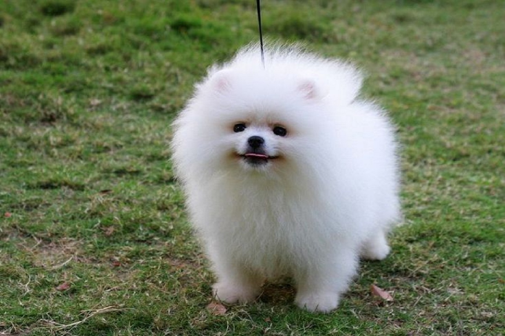

温馨提示
不喜欢狗的、没有爱心的、没有真心喜欢动物的，请不要领养狗狗。孕妇、手脚不方便的人请谨慎选择领养。我们只欢迎喜爱狗狗，了解狗狗的人士，领养适合自己的狗狗。
金毛
金毛狗是属于匀称、有力、活泼的一个犬种，特征是稳固、身体各部位配合合理，腿既不太长也不笨拙，表情友善，个性热情、机警、自信而且不怕生。
柯基
优点：性格温和，精力旺盛，容易训练，很快适应家居生活，会成为孩子们的好朋友。缺点：易患进行性视网膜脱落，血液失调，臀部发育不良和脊椎疾病。

博美
尾根位置很高，长有浓密饰毛的尾巴卷放在背上。它具有警惕的性格、聪明的表情、轻快的举止和好奇的天性。体型小巧可爱，适合当伴侣犬。
哈士奇
脸上额头前的“火”明显连上的就是品相好，品种纯的哈士奇。身体紧凑，有着很厚的被毛，耳朵直立，尾巴象刷子，显示出北方地区的遗传特征。
秋田犬
秋田犬可以被视为日本的国犬，它是日本国家的象征。秋田犬原产于日本的秋田县，由于它本质优良，性格机灵开朗，有灵敏的视力和嗅觉。
牛头梗
别看牛头梗长着一副丑样子，就觉得人家狗狗可能玻璃心，其实它可是天生的乐观派。也对吼，长着一张明星脸还有啥可愁的？像不像某一个明显？